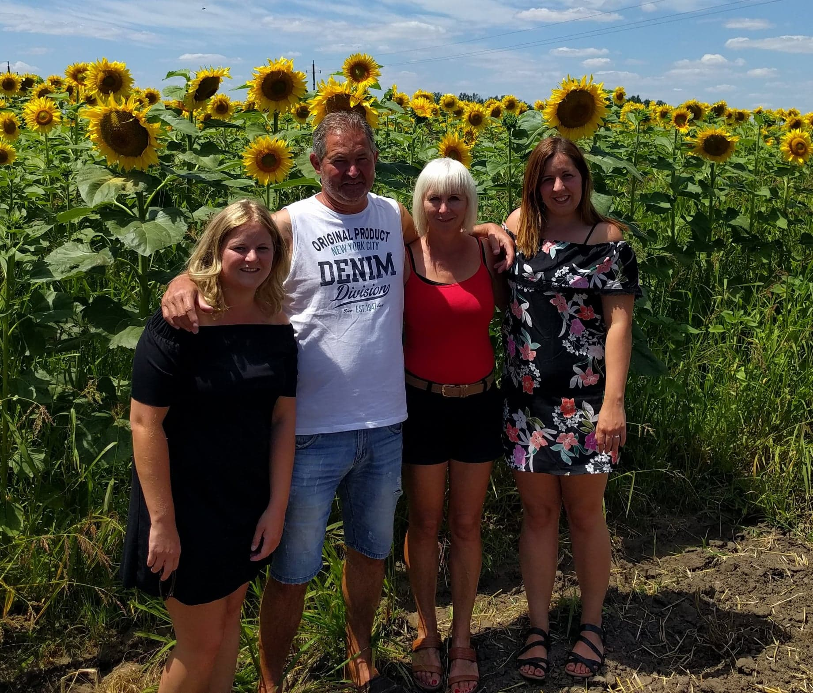
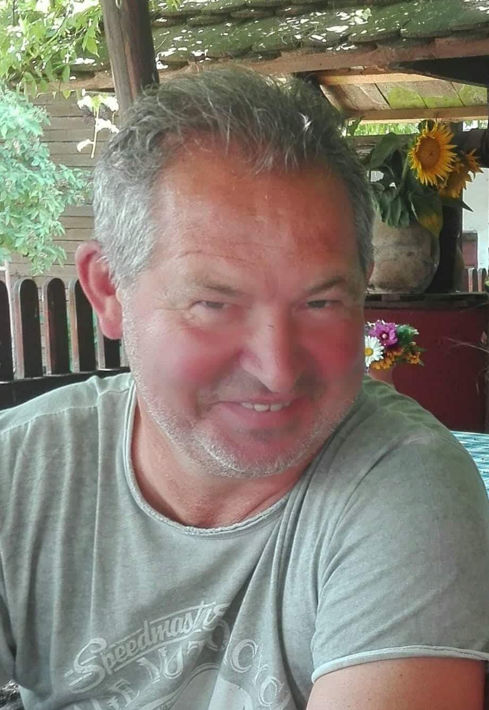
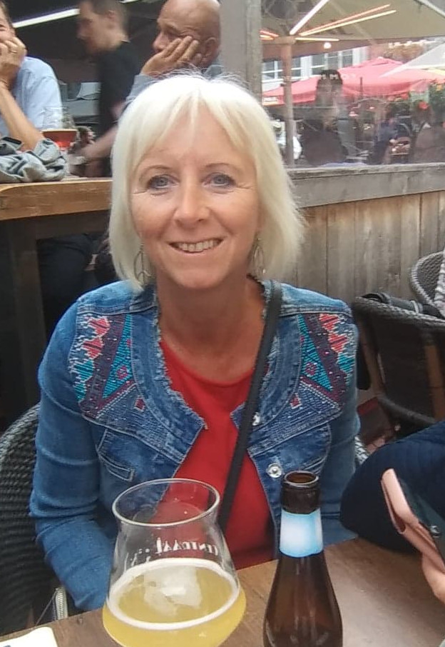
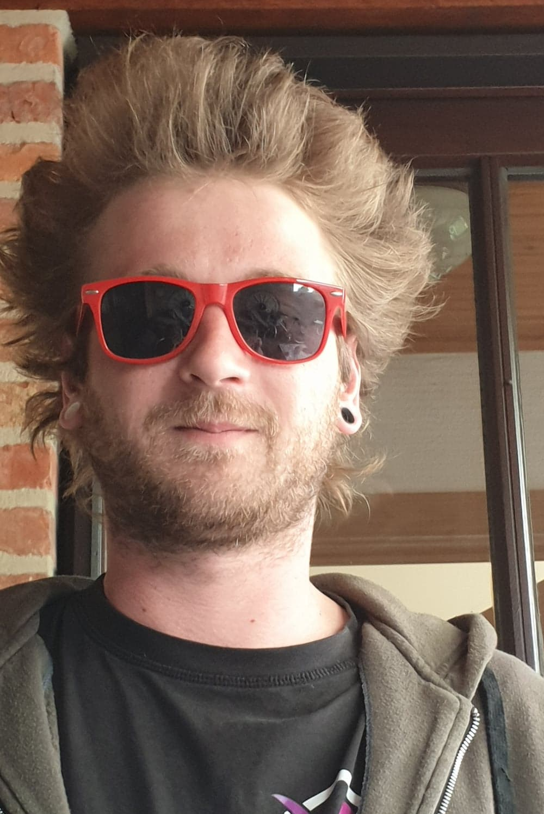
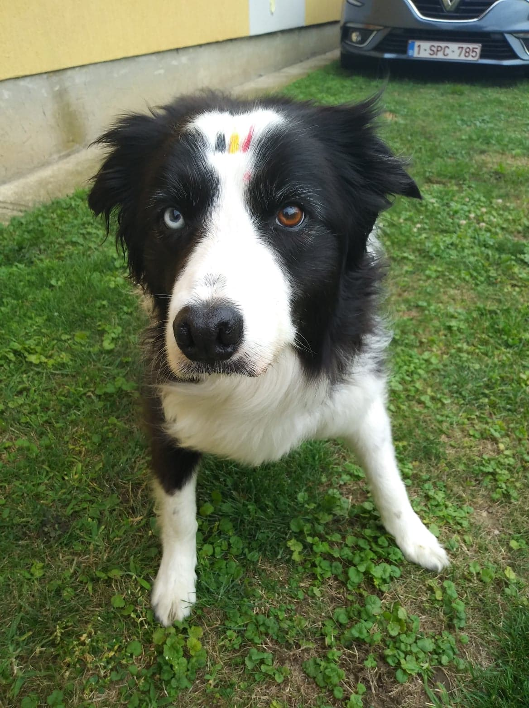
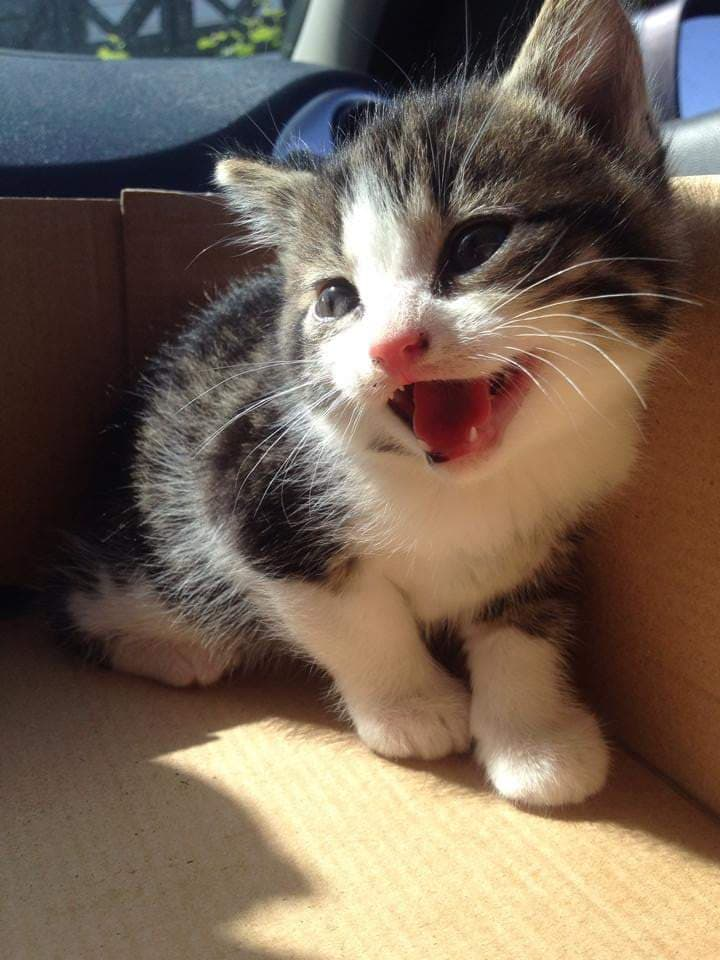
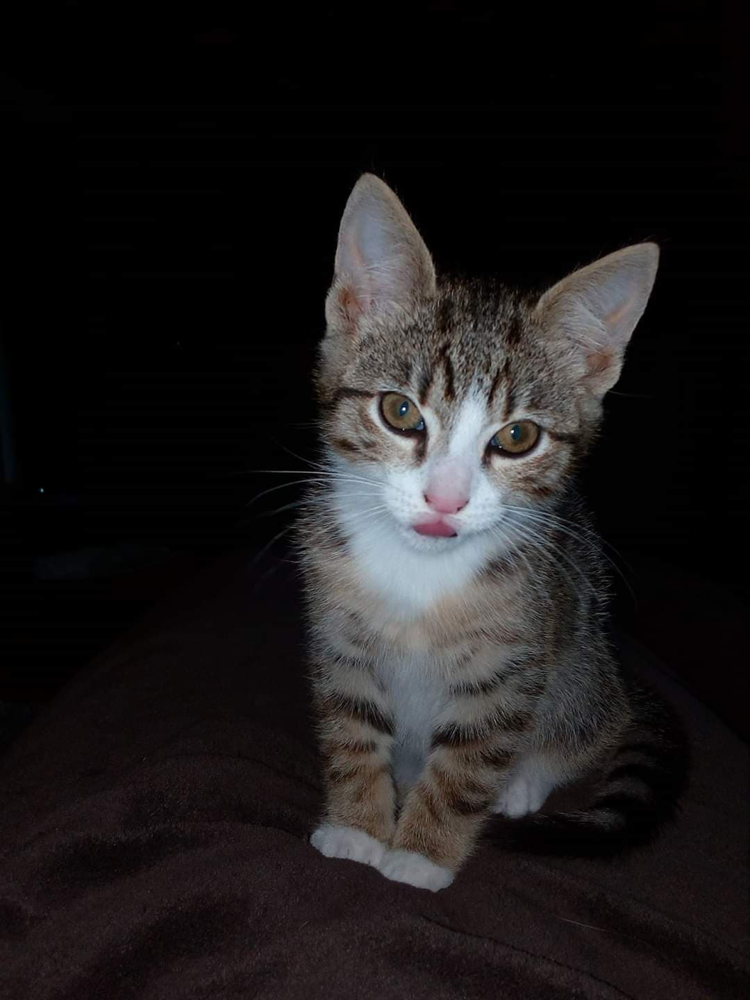

De familie Lambrechts - Janssen
Familie Lambrechts - Janssen
| ||||
|  | ||||
Allé, nog eentje dan!
| ||||
| Genre | Comedy | |||
| Release datum | 20 augustus 1980 | |||
| Bedenkers | Marc Lambrechts Linda Janssen | |||
| Hoofdrollen | Birthe Lambrechts Mara Lambrechts Kenny Broux Elisa Moons | |||
| Sfeer | Acy | |||
| Gezelligheid | Yuka | |||
| Cameo | Jack & Elmo | |||
| In memoriam | Tasha, Kean, Wacko, Snickers, Stragi en die 4 schildpadden | |||
| Land van oorsprong | België | |||
| Taal | Nederlands | |||
| Sponsors | ||||
| Hoofdsponsor | Cristal | |||
| Co-sponsors | Lays Metaxa Cote d'or | |||
| Website | ||||
| (en) IMDb-profiel | ||||
| (en) TV.com | ||||
| ||||
De familie Lambrechts-Janssen is een Belgische komische familie, opgericht door Lambrechts Marc en Linda Janssen Gevestigd in Zonhoven.
De familie houdt van gezelligheid, eten & drinken en slechte moppen. Elke donderdagavond dat ze niet in Hongarije of Spanje zijn, komen ze samen op de Opppelsenweg 27 om te genieten van de heerlijke creaties van Linda. Hierbij ontbreekt één glaasje, of twee, of drie, of nog eentje? zeker niet!
Bij deze een welgemeende dank je wel, mama en papa voor elke donderdag!
Inhoud
Verhaal[bewerken]
De familie vond zijn oorsprong op 20 augustus 1980 toen Linda en Marc in het huwelijksbootje stapte. Het hart van Marc Lambrechts begon pas echt over te slaan, toen hij op die welbepaalde fuif, zijn prinsses, een boerendochter(niet letterlijk) uit Reppel los zag gaan op de dansvloer.
Ze was toen de stoerste chick van Reppel en omstreken omdat ze met deze stoere rocker met zijn coole motor omging. Al snel ruilde ze het landelijke Reppel in voor het stedelijke Zonhoven.
Daar stichte ze deze geweldige familie op. Dat begon bij de geboorte van hun eerste prachtige dochter genaamd 'Birthe Lambrechts' op 10 april 1992 en werd vervoledigd met de komst van 'Mara Lambrechts' op 25 juni 1993. De komst van Mara zorgde ook meteen voor het einde van de uitbreiding van de familie Lambrechts-Janssen. De twee dochters groeide snel uit tot gegeerde welstellende vrouwen en ze vonden al snel hun drommprinsen. Op 20 januari 2006 kwam Kenny Broux zich vervoegen en iets later volgde Elias Moons op 1 januari 2012.
Rolverdeling[bewerken]
Hoofdrollen[bewerken]
| Foto | Geboortedatum | Naam | Beschrijving personage |
|---|---|---|---|
|  | 29 maart 1963 | Marc Lambrechts | Marc is een van de 8 kinderen opgegroeid op den Oppelsen. En is het zorgen kindje van de familie. Ondanks dit mag hij nog steeds zoeel vragen stellen als hij wil bij de dokter. Hierdoor kon hij wel een lange tijd thuis blijven en zorgen voor zijn 2 prachtige dochters en maakte hij de lekkerste puree klaar. Hij is de grappigste van de familie, althans dat denkt hij toch want hij lacht het hardste met zijn eigen flauwe moppen. Toegegeven die eene mop van het gebid is wel een goeike. |
|  | 15 augustus 1965 | Linda Janssen | Linda is één van de witte raven van Reppel. Daar zijn ze met 3 kinderen opgegroeid in het statige Reppel. Daar verkleede ze haar broertje graag als haar zusje. Toen ze thuis kwam met de welbefaalde voetballer uit Zonhoven moest hij een vagevuur ondergaan van haar vader. Haar liefde voor dieren draagt ze heel leven al mee. Nog een van haar hobby's is shoppen met haar prachtige dochters, al draagt ze zelf vaak gewoon de zakjes mee. |
| 19 april 1992 | Birthe Lambrechts | Birthe is de eerste dochter van Marc en Linda. Ze is verwekt in Spanje tijdens de spaanse siësta. Ondanks veel verschillende opleidingen te volgen kwam ze uiteindelijk toch op haar poten terecht. Ze kocht in 2016 samen met Kenny een huisje in Zonhoven op de Ballewijerweg 108. Haar passies zijn fotografie,film en bakken. Ze stapte op 20 januari 2018 in het huwelijksbootje met haar grote liefde Kenny. | |
| 25 juni 1993 | Mara Lambrechts | Mara is de tweede dochter van Marc en Linda. Ze zette al van haar geboorte de boel op stelten. Ze wou al snel op haar papa lijken en donderde met haar stoere ride van de keldertrap. Na een bewogen jeugd wist ze toch een stabiel leven op te bouwen met Moonske. Haar huis is een thuis voor Acy, Jack en Elmo. De dierenliefde nam ze over van haar mama. | |
| 5 maart 1991 | Kenny Broux | Kenny broux is de knapste van de 3 geboeders Broux van Carina en Freddy. Hij groeide op op de Hasseltse Beverzakstraat. Ondanks dat hij uit een boerenfamilie kwam was hij een echte snob. Dit liet hij achter zich toen hij Birthe ontmoette en hij verrasste haar met een huwelijksaanzoek en geheim huwelijksfeest. Zijn hobby's zijn 'gratis spullen' en gamen. | |
|  | 29 september 1990 | Elias Moons | Elias is opgegroeid als enig kind op de Nieuwsstraat in Zonhoven. Op zijn 18de ging hij bij zijn Bomma 'Nana' wonen. Zijn hobby's zijn klommelen aan brommers, auto's en kruiden roken. Kortom hij is een echte chageraar. Hij is een sociaal persoon die graag bij vrienden op bezoek gaat. Al wordt hij pintje per pintje luider en socialer. |
Bijrollen[bewerken]
| Foto | Naam | Ras | Beschrijving personage |
|---|---|---|---|
|  | Yuka | Border collie | Yuka is afkomsting van de boerderij. Ze paste van de eerste minuut al bij de familie. Na een smeertelefoontje naar vader gingen de 3 dames ervandoor met deze lieve schat die onderweg Mara volkakte. Ondertussen is ze een echte fletsmie die af en toe tijd voor zichzelf nodig heeft op haar slaapkamer. Samen met Linda vormt ze een onafscheidelijk wandelduo. Je kan haar vinden op facebook onder de naam: 'Yuka Cantwaitfor it Lambrechts'. |
| Acy | Franse bulldog | Acy is afkomstig van Laakdal als enige pup zat ze in een hoekje, zielig te kijken. Het was meteen liefde op het eerste gezicht. Haar hobby's zijn snurken, scheten laten en naar de muur kijken. Al durft ze af en toe ook aan je been te lekken. Af en toe vervoegd ze het wandelduo: Linda en Yuka. | |
|  | Jack | Straatkat | Jack werd gered door Mara en Elias bij een kennis van hun. Al zijn broertjes en zussen waren opgegeten door de hond des huizes. HIj voelde zich meteen thuis en ontpopte zich al snel tot de leider van het huis. |  | Elmo | Staatkat | Elmo voegde zich in 2017 bij bij het gezin. Hij werd al snel beste vriendjes met de rest van het gezin. |
Leuke weetjes[bewerken]
- Birthe zet recepten online onder de naam 'De bakbitch'.
- Het favoriete citaat van Marc op facebook is:'We leven maar één keer. Wat voorbij is komt nooit terug.' Zijn geloofsovertuiging is :'In mijn eigen'.
- Linda is grote fan van zwarte mannen
- Bij Mara en Elias aan de achter deur hangt een quote:'Home is where my dog is'.

{kind=link}
{kind=link}
_(cropped).jpg){kind=link}